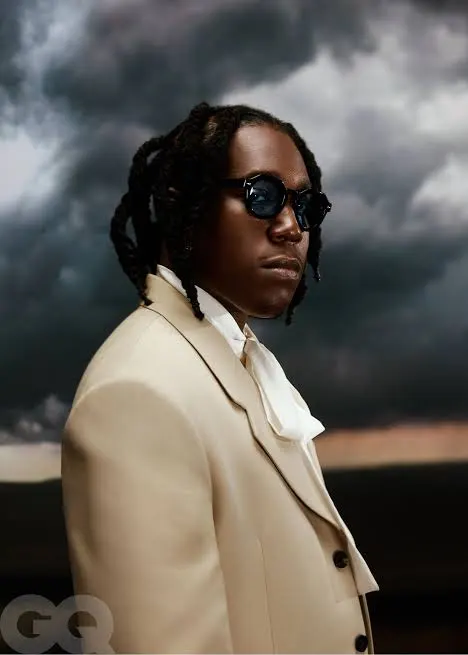

Don Toliver

Caleb Zackery "Don" Toliver, född den 12 juni 1994 i Houston, är en amerikansk sångare, rappare och låtskrivare. Han har släppt fem soloablum, det första, Donny Womack, år 2018. Samtliga album har placerat sig på den amerikanska topp-10-listan. Hans senaste album, Octane, intog Billboardlistans förstaplats. Som del i rappgruppen Jackboys har han släppt två album som båda nått Billboardlistans förstaplats.
As a lead artist, he gained stronger recognition with his 2019 single, "No Idea" and his 2020 single "After Party", both of which entered the Billboard Hot 100 and received triple platinum certifications by the Recording Industry Association of America (RIAA). Both songs first gained viral popularity on the video-hosting service TikTok, and preceded his debut studio album, Heaven or Hell (2020). A critical and commercial success, it peaked within the top ten of the Billboard 200 along with his second and third albums, Life of a Don (2021) and Love Sick (2023). He guest appeared alongside Nav and Gunna on Internet Money's 2020 single "Lemonade", which peaked within the top ten of the Billboard Hot 100.